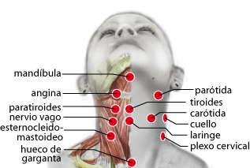

59. Hueso hioides
59. Hueso hioides
Hueso hioides:
Síndrome de Sjogren
60. Glándula salivar
60. Glándula salivar
Glándula salivar:
Proteus vulgaris
61. Tiroides
61. Tiroides
Tiroides:
Disfunción glandular
Bulbo raquídeo:
Meningitis viral
Duodeno:
Obesidad
Escápula:
Obesidad
Pómulo:
Obesidad
Timo:
Obesidad
Corazón:
Orgullo
62. Laringe
62. Laringe
Laringe:
Bordetella Pertusis
Duodeno:
Micosis
63. Traquea
63. Traquea
Traquea (hl):
Influenza
Corazón:
Intolerancia
64. Paratiroides
64. Paratiroides
Paratiroides:
Disfunción Glandular
Paratiroides:
Depresión
Corazón:
Odio
Tiroides:
Ira
Ojo (I):
Inteligencia
Riñón (cl):
Goiz
65. Amígdala palatina
65. Amígdala palatina
Riñón:
Intoxicación crónica
66. Parótida
66. Parótida
Parótida:
Disfunción, Parotiditis
Parótida:
Depresión
Pineal:
Memoria
Riñón (cl):
Goiz
Corazón:
Envidia
67. Angina
67. Angina
Angina:
Herpes II
68. Carótida
68. Carótida
Carótida:
Hipertensión arterial
Pudendo:
Parotiditis
Aorta:
Problemas cardíacos
Yugular:
Estreptococo Pneumoniae
69. Yugular
69. Yugular
Carótida:
Estreptococo Pneumoniae
70. Nervio Vago
70. Nervio Vago
Cardias
Reservorio, disfunción
Riñón:
Estómago, disfunción
Riñón (D):
Autismo (falso)
71. ECM
71. ECM
Esternocleidomastoideo:
Sist. Nerv. Simpático
Esternocleidomastoideo:
Resentimiento
Hipófisis:
Resentimiento
72. Cuello
72. Cuello
Cuello:
Blastocistis hominis
73. Plexo cervical
73. Plexo cervical
Plexo cervical:
Enterococus Fecalis
Plexo cervical:
Desbloqueo energético
Plexo cervical:
Pánico
Bulbo:
Sereratia fonticola
Supraespinoso:
Microbacterium avium
Sacro:
Acido úrico, gota
Utero:
Infección vaginal
74. Hueco garganta
74. Hueco garganta
Gluteo:
Reservorio
75. Atlas
75. Atlas
Atlas:
Frigidez, deseo sexual
Utero:
Infección vaginal
Utero:
Celos
Píloro:
Plsmodium Falciparum
76. Cervicales
76. Cervicales (cérvico)
Cervicales:
Insomnio
Utero:
Infección vaginal
Dorsal
Tennis elbow, Bursitis
Lumbar
Relajar
Sacro
Disfunción parasimpático
77. Cervical 1
77. Cervical 1
Píloro:
Plasmodium vivax
Cervical 1:
Radiculopatía
Píloro:
Fibromialgia
Píloro:
Ballantidium tifo
78. Cervical 2
78. Cervical 2
Cervical 2:
Estreptococo Bovis
Cervical 2:
Radiculopatía
Cervical 2:
Legionela
79. Cervical 3
79. Cervical 3
Cervical 3:
Estreptococo Beta hemolítico
Cervical 3:
Radiculopatía
Supraespinoso, Deltoides:
Balantidum T.
80. Cervical 4
80. Cervical 4
Cervical 4:
Pseudomona aureoginosa
Cervical 4:
Radiculopatía
81. Cervical 5
81. Cervical 5
Cervical 5:
Estafilococo Aureus
Cervical 5:
Radiculopatía
Píloro:
Estafilococo viridians
82. Cervical 6
82. Cervical 6
Cervical 6:
Chlamidia pneumoniae
Cervical 6:
Radiculopatía
83. Cervical 7
83. Cervical 7
Cervical 7:
Estafilococo Capitis
Cervical 7:
Radiculopatía
Dorsal 1:
Tennis-elbow, bursitis
Cervical 7:
Desbloqueo energético
Continuar...
Continuar...
Rastrear puntos de brazos
Rastreo Cuello
Cabeza
Cuello
Brazos
Torso
Dorso
Piernas
Otros
Puntos, lista